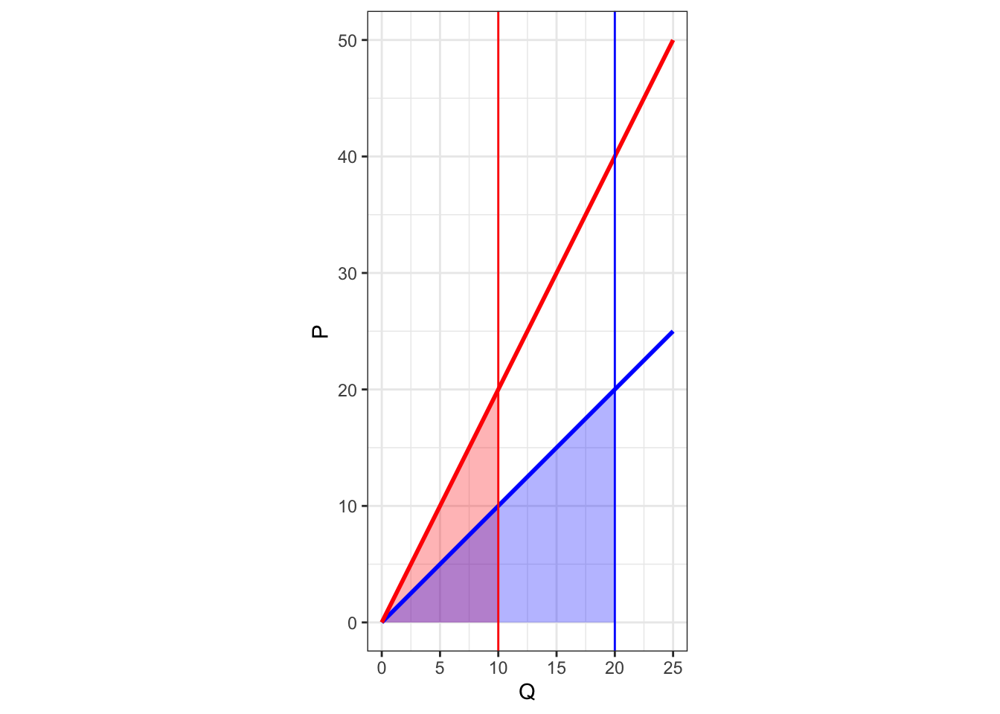

Quiz 2
Classwork 6
Section 1. Multiple Choice Questions
Question 1
A paradox in travel-cost models is that individuals living closest to a site may appear to value it less because:
- They visit less frequently.
- Their low travel costs suggest a lower willingness to pay.
- They prefer alternative sites.
- They incur higher opportunity costs.
Answer: B. Their low travel costs suggest a lower willingness to pay.
Explanation: Since travel costs are used as a proxy for price, individuals living nearby incur lower costs, which may incorrectly indicate a lower willingness to pay. In reality, they may value the site highly but their proximity results in minimal travel expenses.
Question 2
What is the “fat tail” problem in climate change economics?
- It refers to the slow decline of GHG concentrations over time.
- It represents the high probability of small, insignificant climate events.
- It signifies a higher probability of extreme climate outcomes than predicted by normal distributions.
- It describes the accumulation of minor climate effects leading to a major event.
Answer: C. It signifies a higher probability of extreme climate outcomes than predicted by normal distributions.
Explanation: The “fat tail” problem indicates that the probability distribution of climate impacts has a heavier tail, meaning there’s a higher chance of extreme, high-consequence, low-probability events than a normal distribution would suggest.
Question 3
In the context of emissions trading programs, what is a “hard collar”?
- A mechanism that prevents allowance prices from falling below a minimum level.
- A mechanism that places no limits on the number of allowances added to prevent prices from rising above a ceiling.
- A fixed limit on both the maximum and minimum allowance prices.
- A regulatory approach that adjusts emission targets based on economic conditions.
Answer: B
Explanation: A hard collar allows unlimited allowances to be added to the system to prevent prices from rising above a certain trigger price, ensuring price certainty but potentially compromising emissions targets.
Question 4
Which of the following best defines “moral hazard” in the context of flood insurance?
- Homeowners taking greater risks because they are protected from the consequences.
- Insurers charging higher premiums to high-risk homeowners.
- Government regulations preventing building in flood zones.
- The natural tendency of individuals to avoid risky areas.
Answer: A
Explanation: Moral hazard occurs when individuals have less incentive to avoid risk because they are insulated from its consequences, such as through subsidized insurance.
Section 2. Filling-in-the-Blanks Questions
Question 5
Meta-analysis takes empirical estimates from a sample of studies and statistically relates them to study characteristics.
Explanation: This approach helps identify how different factors influence valuation estimates across studies.
Question 6
Tipping points refer to thresholds where small changes can lead to significant and possibly irreversible shifts in the climate system.
Explanation: Tipping points are critical thresholds that, when exceeded, can lead to large and irreversible changes in the climate system.
Question 7
A carbon offset credit is a transferrable instrument certified to represent an emission reduction of one metric ton of CO2e.
Explanation: Offset credits allow for trading of certified emissions reductions.
Question 8
The phenomenon where people tend to underestimate the likelihood that losses will occur from future hazards is called optimism.
Explanation: Optimism is one of the six reasons people underprepare for disasters.
Section 3. Short Essay Questions
Question 9
Describe how “issue linkage” might improve international cooperation on climate change.
Answer:
Please refer to the lecture slides
Section 4. Analytical Questions
Question 10
A new environmental regulation is expected to reduce the mortality risk by 1 in 100,000 for each of 1 million people. If the VSL is estimated at $9 million, what is the total monetary benefit of this regulation in terms of reduced mortality risk?
****Answer:****
First, calculate the expected number of lives saved:
\[ \begin{align} \text{Lives Saved} &= \text{Population} \times \text{Risk Reduction}\\ &= 1,000,000 \times \frac{1}{100,000}\\ &= 10\; \text{lives} \end{align} \] Then, calculate the total monetary benefit:
\[ \begin{align} \text{Total Benefit} &= \text{Lives Saved} \times \text{VSL}\\ &= 10 \times \$9,000,000\\ &=\$90,000,000 \end{align} \]
Question 11
Suppose there are two firms, Firm A and Firm B, both emitting greenhouse gases (GHGs) The government aims to reduce total GHG emissions by 30 units. The marginal cost (MC) of GHG emission reduction for the two firms are given by:
- Firm A: \(\text{MC}_A = 2Q_A\)
- Firm B: \(\text{MC}_B = Q_B\)
where \(Q_A\) and \(Q_B\) are the quantities of GHG emission reduction by Firm A and Firm B, respectively.
- Determine the cost-effective allocation of GHG emission reduction between Firm A and Firm B to achieve the total GHG emission reduction of 30 units.
Answer:
To achieve cost-effectiveness, the marginal abatement costs must be equal across both firms:
\[ \begin{align} MC_{A} &= MC_{B}\\ 2Q_{A} &= Q_{B}\tag{1} \end{align} \] The total GHG emission reduction required is: \[ Q_A + Q_B = 30\tag{2} \]
Solving the system of the two equations (1) and (2) gives:
\[ Q_{A}^{o} = 10,\; Q_{B}^{o} = 20 \]
- Calculate the total cost of GHG emission reduction for each firm under this cost-effective allocation.
Answer:
The total cost of each firm’s pollution reduction is the triangle area under the each firm’s \(MC\) curve:
\[ \begin{align} TC_{A} = \frac{1}{2}\times 10 \times 20 = 100,\\ TC_{B} = \frac{1}{2}\times 20 \times 20 = 200. \end{align} \]